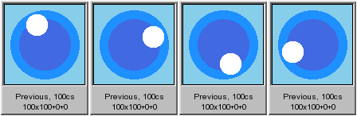
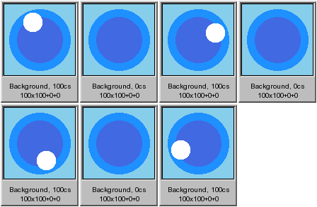
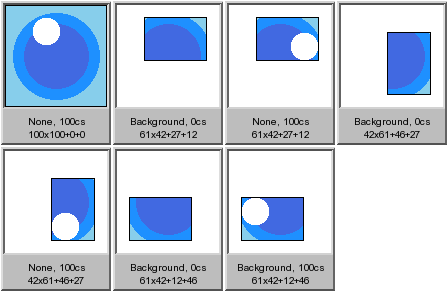
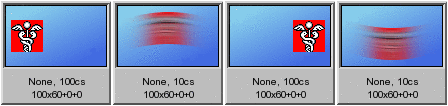
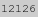
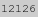
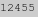

ImageMagick Examples --
 Animation Optimization
Animation Optimization
- Index
-
 ImageMagick Examples Preface and Index
ImageMagick Examples Preface and Index
-
 Introduction to Optimization
Introduction to Optimization
-
General Purpose GIF Optimizer of ImageMagick
-
Frame Optimization
- Basic Frame Optimization
- No Pixel Overlay - repeated image every second frame
- Moving Hole Animation - a difficult to frame optimize animation
- Frame Doubling
- Layer Optimize Plus
- Remove Duplicate Frames
- Splitting Frame Updates
- Remove Zero Delay Frames
- Frame Optimization Results and Summary
-
Semi-Transparency Handling
-
Color Optimization
- GIF Color Problem
- Speed Animation - an animation with too many colors
- Frame Opt Before Color Opt?
- Fuzzy Color Optimization
- Single Global Color Table
- Dithering Colors
-
Compression Optimization
-
Minor Optimizations
-
Other Sources of Information on GIF Optimization
Introduction to Animation Optimization
Optimizing an animation is not easy, especially a GIF animation that has color restrictions, as well as a choice of different frame disposal techniques, and the ability to use smaller 'sub-frame' overlays from one frame to the next. When optimizing animation you should try to optimize them in the following order.- Minor Optimizations
- Semi-Transparency Handling
- Color Optimizations
- Frame Optimizations
- Compression Optimizations
- Single Global Color Table
General Purpose GIF Optimizer of ImageMagick
The "-layers" method 'Optimize' will use a number of the techniques, that we will discuss in detail below, to attempt to optimize a GIF animation in a single reasonable step. Currently this option is equivalent to (in order)...
- A Coalesce the Animation.
- Basic Frame Optimization
- and Transparency Optimization
Optimize' operator should produce a good well optimized animation. The operator however is still in development, and in future is likely to also include extra standard optimization steps, such as...
- A 50% Threshold of the alpha channel, just as the IM does normally does when saving to the GIF file format, to remove semi-transparent pixels. You can still do the semi-transparency handling yourself before hand to override this, if you like. See GIF Boolean Transparency for more detail.
- Some type of Color Optimization technique. Exactly what, is still to be decided, and may be selected depending on the animation and the number of colors involved. Suggestions Welcome.
- A Single Global Color Table, "
+map" operation.
Optimize' will eventually become the IM generic GIF animation optimizer, for quick and easy use by IM users. Until then be careful of its use, especially in scripts as it will change. Of course as many optimization steps may not be worth the effort for a specific animation. This option will also likely become quite slow. This is the plan, and the goal that this IM Examples section, was looking toward.
Frame Optimizations
Frame optimization is based on overlaying a smaller sub-image rather than a complete overlay of the whole image. This obviously produces a smaller number of pixels and thus a smaller file on disk, to being sent across the network. Also overlaying a smaller frame means the client computer does not have to do as much work in changing pixels on screen. However there are different disposal methods available in the GIF format to handle the last frame displayed, and that can result in different size overlays. Not only that but it is possible to split up the overlays into multiple parts, or update actions, bring about a more complex but more optimized animation. Because of the complexity of doing frame optimizations, any existing frame optimizations are typically always removed first by using "-coalesce" operation. See Coalesce Examples. Naturally that means any hand optimizations that may have existed are also removed, so some caution is advised.
Basic Frame Optimization
The "-deconstruct" method will produce a basic frame optimization for a GIF animation. However as was shown in the Deconstruct Examples of the previous section, this operator does not work with all GIF animations when transparent pixels are involved. Specifically when an animation clears any colored pixel to transparency. That is, it will only work with Overlay Animations. The "-layers" method 'OptimizeFrame' is designed to be a GIF Frame Optimizer, which will try to find the smallest sub-frames overlay images, using any GIF disposal method. The result is generally a Mixed Disposal Animation though often it will also generate a Cleared Frame Animations or Pure Overlay Animations, if that was determined to be the best solution for the specific animation. Remember the input animation must be a 'coalesced animation', so it consists of a sequence of complete image frames, all the same size, without any canvas offsets. Of course any existing dispose methods in coalesced animation is completely irrelevant, and will be ignored by the 'OptimizeFrame' method. For example, lets try this with a Dispose Previous Animation, created in the previous section.
|
|||
![[IM Output]](../anim_basics/coalesce_frames.gif) ![[IM Output]](optframe_frames.gif)
|
-layers OptimizeFrame' correctly returned our animation back into its original frame optimized form, using Previous Disposal. This optimization even works properly for the trickier to handle Background Dispose Animations...
|
|||
![[IM Output]](optframe_bgnd_frames.gif)
|
Now for some bad news about any type of simple frame optimization, such as what IM provides... While '
OptimizeFrame' returns the best possible frame optimization for a given animation that IM can figure out, there are is a number of special cases where it does not do well. These include...
- Animations where pixel clearing (returning to transparency) is needed, but the frame overlays are too large to efficiently clear the small areas of pixels that needs to be cleared (see the move hole animation below).
- Animations involving two or more small areas of change that are distantly separated. These are actually quite common, and horrible to frame optimize. (See Splitting Frame Updates below)
- Animations with very complex backgrounds that remain static for long periods (more than 3 frames), but then change slightly before remain static for another long period, etc., etc., etc... Or a static background that becomes greatly obscured for a very short period. It can be near impossible for any computer algorithm to figure out the 'best' frame optimization in this complex situation (IE: What should be regarded as a static background?). Only humans with their intuitive grasp on what they see, can generate a good optimally frame overlay sequence in these cases.
No Pixel Overlay - repeated image every second frame
![[animation]](../images/paddleball.gif) Sometimes the best optimization for an image involves not overlaying any pixels at all! For example to the right is a simple animation, contributed by nixscripter. If we look at its frames you can see it is not very optimized. But notice that every second frame of the animation is simply repeated.
Sometimes the best optimization for an image involves not overlaying any pixels at all! For example to the right is a simple animation, contributed by nixscripter. If we look at its frames you can see it is not very optimized. But notice that every second frame of the animation is simply repeated.
gif_anim_montage paddleball.gif paddleball_frames.gif |
![[IM Output]](paddleball_frames.gif)
|
![[IM Output]](paddleball_opt.gif)
|
||
![[IM Output]](paddleball_opt_frames.gif)
|
-crop" 'misses' the actual image data, producing the same result. This image, in effect, only preserves the frames meta-data, such as: Dispose Method, Time Delay, and Loop Iterations. As such it is an essential part of the animation, even though it is 'empty'. So by overylaying a bare minimal single transparent pixel, IM saved a huge amount of space (and time) in this animation.Moving Hole Animation - difficult to frame optimize
Here is one extreme case of GIF animation that does not frame optimize very well by any normal optimization method. This animation basically consists of a simple unchanging background image but with a transparent 'hole' through that background that changed position from frame to frame. To create it I need to make a coalesced image sequence, where I cut up a hole in a fixed background image, using Layer Alpha Composition. I also used a "+antialias" switch to ensure only four colors are used three blues and the transparency. So we don't need to deal with Color Optimization Problems.
|
![[IM Output]](moving_hole.gif)
|
||
![[IM Output]](moving_hole_frames.gif)
|
|
![[IM Output]](moving_hole_opt.gif)
|
||
|  |
Frame Doubling - a method to frame optimize 'holes'
All is not lost however. By adding some extra frames to the animation, you can give the 'OptimizeFrame' method some room in which to make better use of the GIF disposal methods available. Here for example we add an extra frame by doubling up the first image, but giving it a zero time delay so as not to change the overall timings of the animation.
|
![[IM Output]](moving_hole_dup.gif)
|
||
![[IM Output]](moving_hole_dup_frames.gif)
|
|
![[IM Output]](moving_hole_double.gif)
|
||
![[IM Output]](moving_hole_double_frames.gif)
|
![[IM Text]](moving_hole_double_size.txt.gif) bytes in size, a smaller result, though not nearly as big a saving as the first single frame doubling we performed. So that you can follow what is happening, the '
bytes in size, a smaller result, though not nearly as big a saving as the first single frame doubling we performed. So that you can follow what is happening, the 'Background' frame is an exact duplicate of the previous frame, making no change to what is being displayed. However, it defines the area of the animation that needs to cleared before the next frame image is overlaid. The following 'None' frame then fills in the pixels that need to be changed, as well as the pixels that the previous frames disposal also cleared. In the above animation that means the pixels that was needed to shape the new hole, and well as the pixels that was used to fill-in the previous 'hole'. The result is smaller but not nearly as much, as adding extra frames does have its own cost. At least each of the added frames also does not have its own color table, or this animation would have in fact become larger, due to the size of the extra color tables!
Layer Optimize Plus - Automatic frame doubling Optimization
I am please to say that as of version 6.2.7, IM can now do frame doubling optimization automatically, as part of its normal frame optimization handling. However as adding frames to make an animation smaller is so radical a move, it was given its own separate "-layers" method 'OptimizePlus'. For example, lets get IM to do the frame doubling optimization...
|
![[IM Output]](moving_hole_oplus.gif)
|
||
![[IM Output]](moving_hole_oplus_frames.gif)
|
![[IM Text]](moving_hole_oplus_size.txt.gif) bytes in size. However '
bytes in size. However 'OptimizePlus' will only frame double if the number of pixels in the current and next frame of the resulting animation (3 frames) is reduced, so we can let IM decide whether to frame double or not. As "-layers" method 'OptimizePlus' adds extra frames as it creates an frame optimized GIF animation, it also will remove any unneeded or extra frames that make no change to the final animation (merging delay times as appropriate). That is, it will also do an automatic 'RemoveDups' (see next). The 'OptimizeFrame' method will not do this.
Remove Duplicate Frames - merging consecutive duplicate images
Unfortunately if you coalesce" this animation, you will also get all the extra frames that the above added.
magick moving_hole_oplus.gif -coalesce gif:- |\
gif_anim_montage x2 - moving_hole_oplus_cframes.gif
|
![[IM Output]](moving_hole_oplus_cframes.gif)
RemoveDups' method has been provided. This compares each frame with the next frame in the animation, and removes the first frame if they are identical (with color similarity set by the current Fuzz Factor). Also to ensure that any timings in the animation are not lost, the Timing Delays of the two frames are also merged. For example..
magick moving_hole_oplus.gif -coalesce -layers RemoveDups gif:- |\
gif_anim_montage - moving_hole_oplus_rmdups_frames.gif
|
![[IM Output]](moving_hole_oplus_rmdups_frames.gif)
RemoveZero' method below.
Splitting Frame Updates - separately updating two distant changes
As you have seen with frame doubling, by separating the 'clearing of pixels' from the overlaying of new pixels, we can reduce the overall size of a single frame overlay. However this animation still produces some very large overlays, which mostly consist of pixels that don't actually change from one frame to the next. That is, the main overlay frame is only updating two rather small areas that are quite distant from each other thereby producing a single large overlay image. Rather than trying to update both changes simultaneously while will also includiing all those the unchanged pixels in-between the two area, we instead update each area separatally. That is, we split the frame update into two phases, one for each of the separated areas that changed. In this case we can fill in the hole first, then create the new hole as a separate update.It does not actually matter (except with possible regard to disposals) which of the two separate changes happen in which order, but you should try to be logical about it. It may also be that one change is easier to create than another. For example, here I insert extra frames to fill in the old hole as a separate update to the 'digging' of the new hole. This is the easier intermediate frame to generate as well as the most logical ordering of actions. Of course you do not need to do this for the last frame, as that frame is just junked before the animation loops.
|
![[IM Output]](moving_hole_split.gif)
|
||
|  |
|
![[IM Output]](moving_hole_split_opt.gif)
|
||
|  |
|
|||
![[IM Output]](moving_hole_split_oplus_frames.gif)
|
Of course, if the two separated parts of the animation are not actually related, then they do not need to be time synchronized. Another alternative is that instead of adding extra frames, to split the animation to two completely separate animations that you can displaying together on a web page. See Splitting up an Animation. This particular animation however cannot be split up into separate time disjoint animations. First the distant changes need to be time synchronised. and second the four areas that do change, overlap in both the horizontal and vertical directions. This means a simple HTML 'table' cannot rejoin the sub-animations into a complete whole, without some type of CSS trickery. Can you prove me wrong? FUTURE: reference to a better example of animating 'two distant objects'. in 'Animation Handling', say involving two separately moving objects.
Remove Zero Delay Frames - removing intermediate updates
Of course sometimes you are not interested or want to remove these added intermediate frames from an animation, leaving just the frames that will actually be shown to an user for some period of time. You can't just coalesce the animation and use the 'RemoveDups' method as not all 'Intermediate Frames' are similar to the surounding frames, and are thus not duplicates. However as these types of frame have a Zero Time Delay you can use another special "-layers" method, 'RemoveZero' which will remove any frame that has a zero time delay. This same method will also remove the frames added using Frame Doubling and 'OptimizePlus' techniques as well. For example...
magick moving_hole_split_oplus.gif -coalesce -layers RemoveZero gif:- |\
gif_anim_montage - moving_hole_split_rmzero_frames.gif
|
Frame Optimization Results and Summary
Lets summarize our optimizations of the moving hole animation...
![[IM Text]](moving_hole_sizes.txt.gif)
|
| There is the point, that IM should not only account for the number of pixels in current set of frames being looked at, but also the overall size of the extra frame added, and perhaps the overall compression results obtained, when making the decision about how to frame optimize the image. On the other hand IM also does not look at the resulting savings in the number of pixels that may result, beyond the frames that are directly involved. That is, later frames sizes may also be smaller as a result of frame doubling, or the disposal method used. This is especially true when the choice is whether to use 'previous image dispose' method, which can have substantial pixel count reductions later in an animation sequence, rather than immediately in the very next frame. A good choice here often requires human input. As such I can make no guarantee that IM will produce the best optimization choices, for a specific animation. However it certainly gives it a good try, without the use of recursion, to make that choice. That is, only using immediate pixel counts for its decision. A recursive algorithm, one that makes a choice, then see what the best final size of the animation that results from that choice, (including recursive choices further along) can produce a guaranteed best optimization. However it could also be an extremely slow operator, and for a large animation could take years to make the final decision. It would also need to include compression optimization choices, as these could effect the final outcome. In other words, while such an algorithm could guarantee the best optimization, it does so at a heavy computational cost. Of course a human being with an intimate knowledge of what the animation is trying to achieve, will generally do better in complex animations, as you saw above with splitting frame updates. If you would like to try an create a recursive GIF optimization operator please do. I will help in any way I can. It would beat just about every other GIF optimization program on the market. Also most GIF animation developers will probably be very grateful of your efforts (money-wise). |
Semi-Transparency Handling
The GIF file format does not allow the use of semi-transparent pixels (See GIF Boolean Transparency). This is a fact, and before you can properly optimize an animation, or even save it to GIF format, you need to handle any semi-transparent pixels that may be present, in a way that is suitable for the animation. By default if you don't handle these pixels, IM will use a 50% threshold to magick these pixels into either fully-transparent or fully-opaque. However that may not be the best way to handle the problem, particularly in images that contain large areas of semi-transparent pixels, such as shadow effects. For example, I wanted to create a Stargate Asgard Teleport animation that could take just about any sub-image as the object being teleported.
magick -channel RGBA -fill white \
\( medical.gif -repage 100x100+34+65 -coalesce -set delay 200 \) \
\( +clone -motion-blur 0x20+90 -blur 0x3 -colorize 100% \
+clone -colorize 30% +swap -composite -set delay 10 \) \
\( +clone -roll +0-20 -blur 0x3 -colorize 30% \
-motion-blur 0x15+90 -motion-blur 0x15-90 -set delay 10 \) \
\( +clone -colorize 30% \
-motion-blur 0x30+90 -blur 0x5 -crop +0+10\! \) \
\( +clone -motion-blur 0x50+90 -blur 0x2 -crop +0+20\! \) \
\( +page -size 100x100 xc:none -set delay 200 \) \
-set dispose background -coalesce -loop 0 teleport.miff
gif_anim_montage teleport.miff teleport_frames.png
|
![[IM Output]](teleport_frames.png)
Okay I have an animation sequence. If I attempt to save this directly as GIF, IM will just threshold all those semi-transparent pixels.
|
![[IM Output]](teleport_thres.gif)
|
![[IM Output]](teleport_thres_frames.gif)
magick teleport.miff -channel A -threshold 50% +channel \
...do further processing now... teleport.gif
|
![[IM Output]](teleport_thres90_frames.gif)
The best overall solution to preserving all the special effects in the above animation is to just Add a Solid Color Background.
|
![[IM Output]](teleport_bgnd.gif)
|
A simple solution is to use a Diffused Pixel Ordered Dither technique, which can be restricted to just the alpha channel, to remove the semi-transparent pixels.
|
![[IM Output]](teleport_od.gif)
|
![[IM Output]](teleport_od_frames.gif)
Using a Halftone will produce a much nicer effect by making the transparency pattern bolder.
|
![[IM Output]](teleport_htone.gif)
|
![[IM Output]](teleport_htone_frames.gif)
But for this specific animation, I found that using a User Designed Dither Map to produce vertical lines (from a horizontal line dither pattern) produces an effect that enhances the teleporting animation while removing semi-transparent pixels.
|
Color Optimization
Handling semi-transparent pixels is only the first limitation of the GIF file format. The next one is a 256 color limit for each color table in the animation. You are allowed to have a separate color table for each frame. This means a single animation can have more than 256 colors. However, even that may not always be a good idea. If you just like a quick summary of the color optimization options available, I suggest you jump to the examples on Video to GIF conversion where the color problems of an animation is at its worst.GIF Color Problem
GIF animations in particular have problems in handling colors, as you it first does not allow semi-transparent colors, then has a 256 color limit per frame, or a 256 global color limit. Finally your best frame optimization will not work very well unless the colors used for a pixel in one frame also match the same color, in the next frame, when that part of the image did NOT change! This may seem like an easy problem but Color Reduction is itself an extremely complex field, which required its own full section in IM Examples. Color problems are actually why most GIF animations you find on the World Wide Web are of the cartoon variety, or are very bad looking. Especially if resized from a larger version of the animation. In Resizing Animations will probably require more effort in color optimization, than in the actual resize process itself. Here I will assume you have the original source of the animation. But that is not always possible, so if you are optimizing a modified GIF animation, some extra caution may be needed. However if you have an animation with to many colors, the first thing you need to remember is...
Do not save directly to GIF format,
use the MIFF file format, OR separate PNG images.
As soon as you save to GIF, you have lost control of your GIF color optimization efforts, and you probably have a very bad looking GIF animation that will not optimize very well using various Frame Optimization techniques.
use the MIFF file format, OR separate PNG images.
Speed Animation - an Animation with too many colors
First we need to generate a GIF animation with a vast number of colors, so that we can really test out the problems involved in color optimization.
|
![[IM Output]](speed.gif)
|
||
|  |
speed.miff" first. This preserves all aspects of the originally created (or modified) animation, including GIF meta-data, timing delays, as well as all the colors of the image without distortion. Only after preserving the original animation, did I directly convert the original animation to GIF format. That way I could show what the above code is meant to achieve, and why I called it 'speed'. This was done also to provide a base line GIF animation for study and later comparison. So lets look at various details of our original animation..
|
![[IM Text]](speed_nframes.txt.gif)
|
|
![[IM Text]](speed_ncf.txt.gif)
|
|
![[IM Text]](speed_ncolors.txt.gif)
|
|
![[IM Text]](speed_ncolors2.txt.gif)
|
magick identify" command cannot tell you how many such local color tables a GIF file has, as the information is too format specific, and not important to the image processing IM normally does. However the more specific "Giftrans" program can tell you how many low level local color tables were used...
|
![[IM Text]](speed_ctables.txt.gif)
|
local color tables, one less than the number of frames present in the image, just as I predicted. Not only does each frame have a different set of colors, but also a slightly different pattern of colors (the image dither pattern), as described in Problems with Error Correction Dithers. Normally this default operation of IM Color Quantization and Dithering is very good, and perfectly suited for pictures, especially real life photos. In fact the individual frames of an animation will generally look great. All the problems are when we try to later string those individually color reduced frames into an single animation sequence.
Frame Opt before Color Opt?
As you saw above saving an animation directly to a GIF format, works, but you will get quite a lot of color differences from one frame to the next, which s bad for later Frame Optimization (as you will see later). To prevent color differences causing such problems you can do the Frame Optimization before saving the animation, and thus avoiding the introduced color differences from one frame to another. However be warned that doing frame optimization before color reducing however change the dynamics of the color reduction. Often less of the static unmoving areas will appear in the optimized sub-frame, which means that the color quantization for that frame can give those colors less importance, and therefor less colors.Fuzzy Color Optimization
However sometimes you don't have access to the original animation before it was saved to GIF format. This is especially true if you downloaded the original animation from the WWW. That means you already have an animation with all those GIF color distortions already present, producing problems with later optimizations. Now because a slightly different set of colors are used from one frame to the next, and a different pattern of pixels are used for each frame in the animation, each frame can be regarded as a completely different image. For example lets compare the first and third frames, which share large amount of the same background image....
|
![[IM Output]](speed_compare.gif)
|
| Image differences like this are also a problem if your source images were stored using the JPEG image format. This format uses a lossy-compression method that (even at 100% quality) causes slight color differences, in the images. However the differences are generally confined to a halo around the actual areas of difference, rather that throughout the image. All I can say is, avoid JPEG images for use in animations unless you plan to use one single image as a static background image for ALL your frames. |
magick speed.gif -layers OptimizeFrame speed_opt2.gif gif_anim_montage speed_opt2.gif speed_opt2_frames.gif |
![[IM Output]](speed_opt2_frames.gif)
magick speed.gif -fuzz 5% -layers OptimizeFrame speed_opt3.gif gif_anim_montage speed_opt3.gif speed_opt3_frames.gif |
![[IM Output]](speed_opt3_frames.gif)
magick speed.gif -fuzz 5% -deconstruct speed_opt4.gif gif_anim_montage speed_opt4.gif speed_opt4_frames.gif |
![[IM Output]](speed_opt4_frames.gif)
Generating a Single Global Color Table
Now as each and every frame has a different set of colors, IM was forced to save the image, with a separate color table for every frame: one global one for the first frame, and 3 local color tables for the later frames. For example, here I used the very simple program "Giftrans" program to report how many frame color tables were created.
giftrans -L speed.gif 2>&1 | grep -c "Local Color Table:" |
|
|
+map" option, that does a global color reduction to a common palette that is added to all images. NOTE any change to the image will likely invalidate the palette, so while color reduction should be done BEFORE you do GIF frame and/or compression optimizations, the common palette needs to be last, just before saving. If "+map" does not need to reduce the number of colors in an image it will not do it or dither colors, just add a common palette across all images. --- IM can generate a single global color table, if all the frames use the same color palette. In IM color palettes are only assigned to an image either by reading them in from an image format that is using such a palette, or by assigning it one using the "-map" color reduction operator. See Dither with Pre-defined Colormap for more details. One way to generate this single color table is to simply "-append" all the frames together, then using the "-colors" command to reduce the number of colors to a minimal set (less than 256, or smaller if you want an even smaller color table). The resulting color table can then be applied to the original image using "-map". For example, here reduce the image to a single set of 64 colors. This uses the special MPR in-memory register to assign the generated color map to the "-map" command.
|
Giftrans" you will find that the image now uses a single 'global' color table, rather than a separate color table for each frame.
I use a "-background" color of 'None' before appending the images together, allowing you to use this on un-coalesced animations, and not have the possibility adding extra unneeded colors.The special " -quantize" setting of 'transparent' colorspace was used to ensure that IM does not attempt to generate semi-transparent colors in its colormap. An useless thing as we are saving the result to GIF which cannot handle semi-transparency.Finally I color reduce to 63 colors, to leave space for a transparent color. Some animations need transparency, while others (like this one) may still need it later for Compression Optimization. |
+map" which will generate a common color map (of 256 colors) over all the frames, applying it globally. This is a lot simpler than the DIY method above.
|
![[IM Output]](speed_map.gif)
|
![[IM Text]](speed_map_ctables.txt.gif) 'local' (or extra unwanted) color tables in the resulting image. I will be using the single color table version of the animation for the next optimization sections, though you could actually do this at any point in your animation optimizations and especially before the final save.
As a result of color table optimization, the animation which was
'local' (or extra unwanted) color tables in the resulting image. I will be using the single color table version of the animation for the next optimization sections, though you could actually do this at any point in your animation optimizations and especially before the final save.
As a result of color table optimization, the animation which was ![[IM Text]](speed_size.txt.gif) bytes for our directly converted GIF, is now  bytes, after using the "
bytes for our directly converted GIF, is now  bytes, after using the "+map" operator. The more frames (and 'local color tables') an animation has, the larger the saving. Now as any modification to an animation will generally remove the saved palette for each of the images, it is important that the "+map" operator be the last operation before saving the animation to GIF. Remember
Removal of local color maps should be the last optimization, before saving to GIF format.
Ordered Dither, removing the 'static'

... small number of colors ...With a frame optimization of a smaller unmoving area, you can even get a rectangular areas of static that looks even worse. ... Ordered Dither ... For now refer to the more practical and less detailed Video to GIF, Optimization Summary.
Compression Optimization
Once you have your animation saved into a GIF format, by handling semi-transparent pixels and using color and frame optimizations, you are also able to get some smaller file size reductions by catering to the GIF compression algorithm. The LZW compression or Run-length Compression that the GIF file format can use will compress better if it finds larger areas of constant color, or pixel sequences that repeat over and over.Transparency Optimization
As you saw in Frame Optimization an overlaid image will often be just repeating what is already being displayed. That is, it is overlaying the same colored pixels that is already present after the GIF disposal methods have been applied. But why bother repeating those pixels. If you are already using transparency in an image, you have a transparent pixel color available. But converting those areas into transparency, get larger areas of uniform transparent pixels. That can compress better, than using a mix of different colors, needed to match the same area being overlaid. For example, here is a simple Frame Optimized, Overlay Animation...
![[IM Output]](../anim_basics/bunny_bgnd_frames.gif)
|
![[IM Output]](../anim_basics/bunny_bgnd.gif)
|
-layers", method 'OptimizeTransparency' (Added IM v6.3.4-4) to replace any pixel that does change the displayed result with transparency.
|
|||
![[IM Output]](bunny_bgnd_opttrans_frames.gif)
|
FUTURE: link to a 'remove background' from animationOf course like most of the other "
-layers" methods (comparison or optimization) you can specify a Fuzz Factor to adjust, 'how similar' colors are thought to be. That lets you handle animations that were badly color dithered, though if you had studied the Color Optimization above you should not have that problem. The free animated GIF tool "InterGIF" also provides this same type of transparency compression optimization shown above, but without the ability to also support a 'fuzz factor' to also make 'close' color changes transparent. I do not recommend it, except as an alternative when IM is not available.
LZW Optimization - (non-IM)
Some applications can further optimise the compression ratio of the images in an animation to make it them even smaller. However to do this requires a specialized knowledge of the LZW compression that the GIF image file format typically uses. Basically, if a specific sequence of pixels has already been handled by the LZW compression algorithm, it will not bother to magick them into transparent pixels as doing so will not improve the images compression. It sounds weird but it works. Unfortunately ImageMagick will not do this, as it is such a complex process that takes a great deal of skill and resources to get a reasonably good heuristic to produce a good result in the general case. I can however give you a practical example of this technique using the "Gifsicle" application at its highest '-O2' optimization level.
|
![[IM Output]](bunny_bgnd_lzw_frames.gif)
LZW compression optimization reduced the image from bytes with simple transparency optimization, to  bytes for "Gifsicle". Not a large improvement. The more important aspect however is that while LZW optimization converted unchanged pixel to transparency (as we did using Transparency Optimization above), it did not change a sequence of pixels that had already been seen. That is, only groups of pixels that have not already been repeated within the animation were changed, as those pixel would (presumably) already compress well using LZW compression patterns. Note that the selection of what pixels should be made transparent, to generate repeated pixel patterns, is very complex and difficult, and can even depend on the exact LZW implementation as well. It is a heuristic, not a perfectly predictable algorithm. As such different programs will generally produce different results depending on the specific image being compressed. One program may produce a better compression ratio for one image, and another may be better for a different image.
Lossy LZW Optimization - (non-IM)Another compression improvement method involved the slight modification of the pixel colors themselves to 'close color matches' so as to increase the repetition of the color references in the image. A repeated pattern naturally compresses better, and as such can produce a higher compression ratios. A fork of the previous "Gifsicle" application, known as giflossy, also generats a 'gifsicle' program, but one with the option to modify the image in minor ways (it is 'lossy') to reduce the size of GIF images, especially in animation, much further.
![[IM Output]](bunny_bgnd_lossy_frames.gif)
|
![[IM Output]](bunny_bgnd_giflossy.gif)
![[IM Text]](bunny_bgnd_giflossy_size.txt.gif)
![[IM Text]](bunny_bgnd_compress_sizes.txt.gif)
{kind=link}
{kind=link}
{kind=link}
{kind=link}
{kind=link}
{kind=link}
{kind=link}
{kind=link}
{kind=link}
{kind=link}
{kind=link}
{kind=link}
{kind=link}
{kind=link}
{kind=link}
{kind=link}